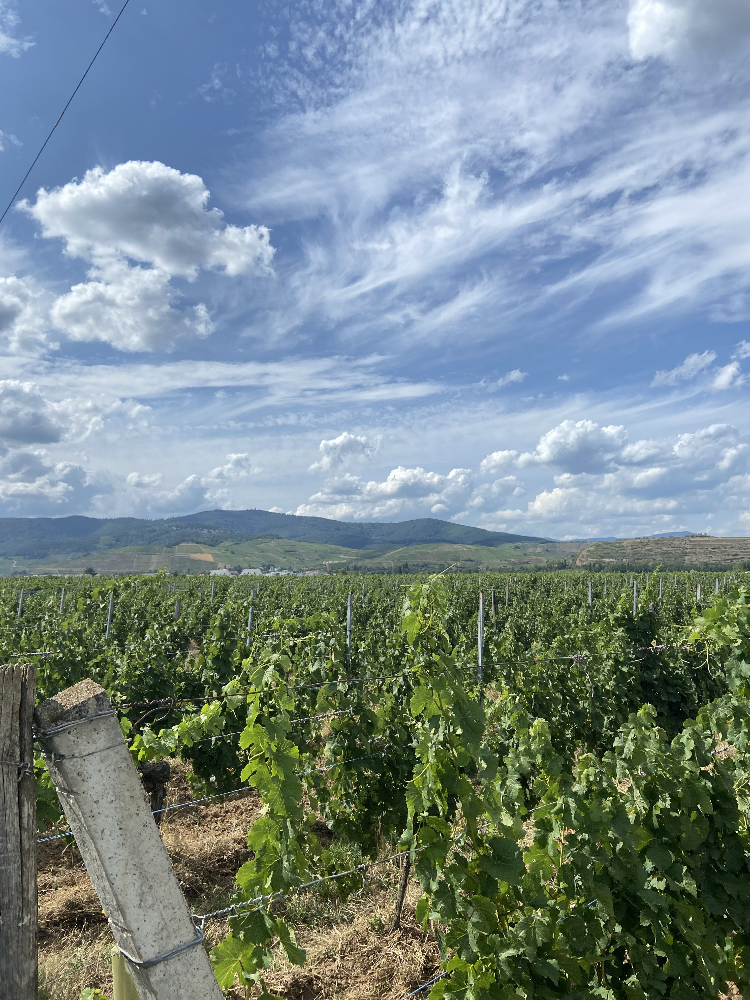
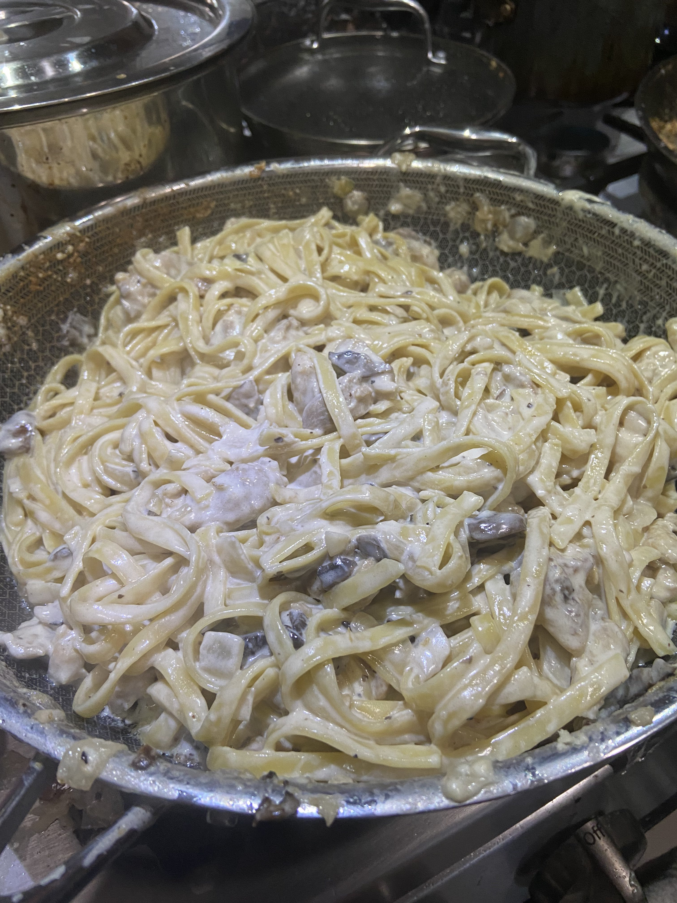
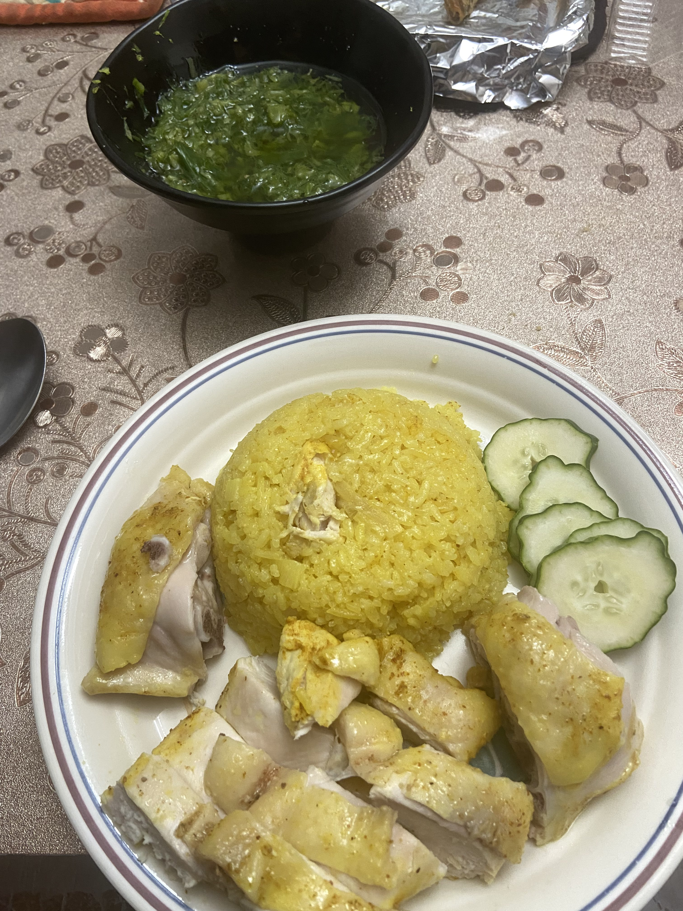
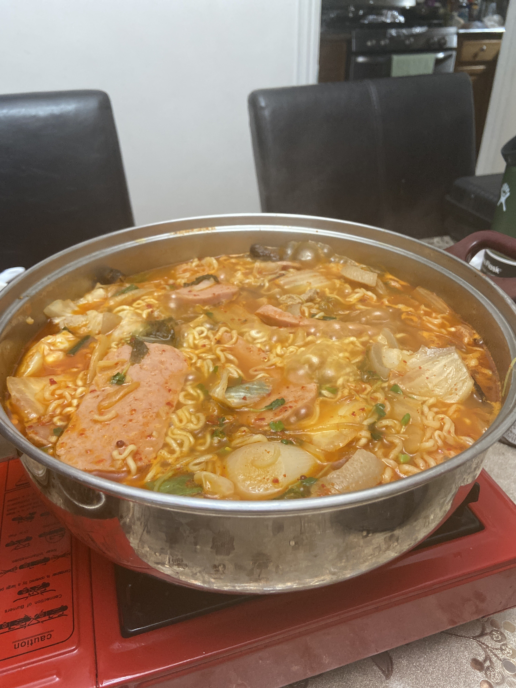
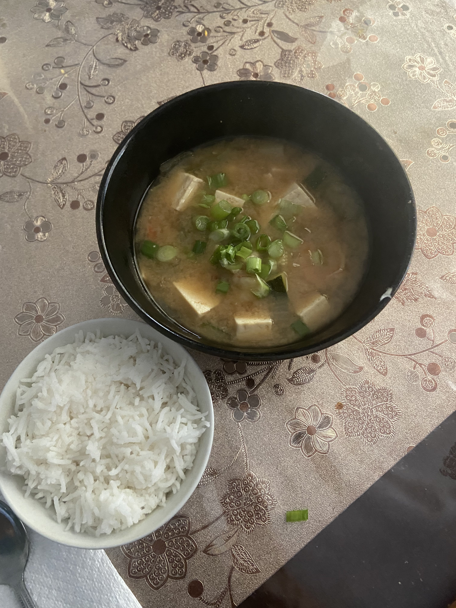

Hello my name is Alexander Lee and welcome to my page! 😁
Pictures of Travels
Every few years, my family usually goes on a vacation for a few weeks either during winter or summer break.
Below are some pictures below of France from this summer:
This is the Arc De Triomphe which was constructed in 1806 and is one of the most famous monuments in Paris, France.
I remember seeing it and being surprised by the architecture and just the sheer size of it. Climbing all the way to the top was
definitely a workout but the view on top was definitely worth it.
Arc De Triomphe in Paris, France
Here is a picture of the Eiffel Tower in Paris, which is the most famous monument in all of France. This picture
was taken somewhat far away from the tower as I had just exited the subway that lead towards the Eiffel Tower. After
taking this photo, I did end up going to the Eiffel Tower up close and went up it.
Eiffel Tower in Paris, France
This photo was taken out in the country side of France where I was visiting my mom's childhood friend. It is a short drive
away from this town named Gerardmer, which has multiple lakes around it with tourists coming around to experience the outdoors
of France rather than the bustling streets of Paris. It was a very relaxing stay and I was able to try some wine while I was there.

Vineyards by Gerardmer
Cooking Food!
A big hobby that has taken over my life in my recent years has been cooking. It is something that I have grown to love to
do whenever I get the chance to. It brings me a lot of joy when I am able to cook for my friends and family and they are able to
enjoy the meals that I create. I have grown from someone who has no knowledge of how to cook the most basic things to becoming a normal
homecook. I was greatly inspired through watching many cooking videos from people such as Gordon Ramsey, Joshua Weissman, Uncle Roger, Maangchi,
and many more great chefs. Here are some pictures of recent recipes that I have created along with a link to a page with my favorite recipe that I have made
in the past few years. Favorite Recipe!




From left to right: Chicken Alfredo, Hainan Chicken, Korean Army Stew, Soybean Stew